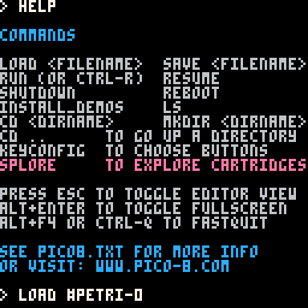
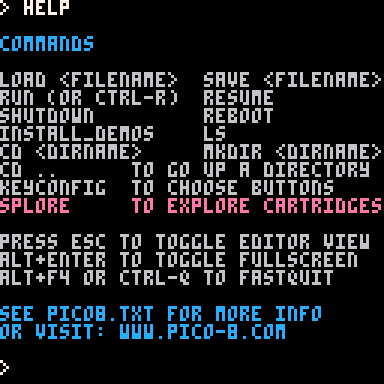
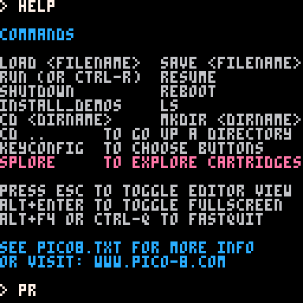
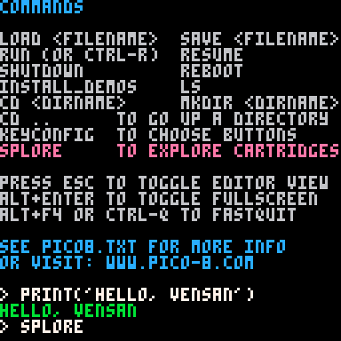
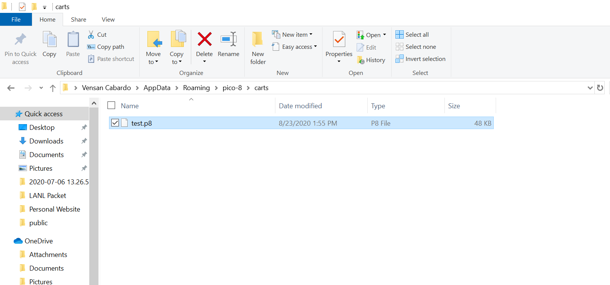

In this activity, we are taking the time to explore the fundamental details involved with working in PICO-8, starting with loading a cartridge from the PICO-8 website.
In the next part of the activity, you can see that I am pasting in the code from a different cartridge and running it. The code was obtained from https://www.lexaloffle.com/bbs/?tid=32771
Next is the standard "Hello, world" kind of program.
Exploring using the SPLORE menu.
And finally, we have the location where p8 files are stored within the file system.
